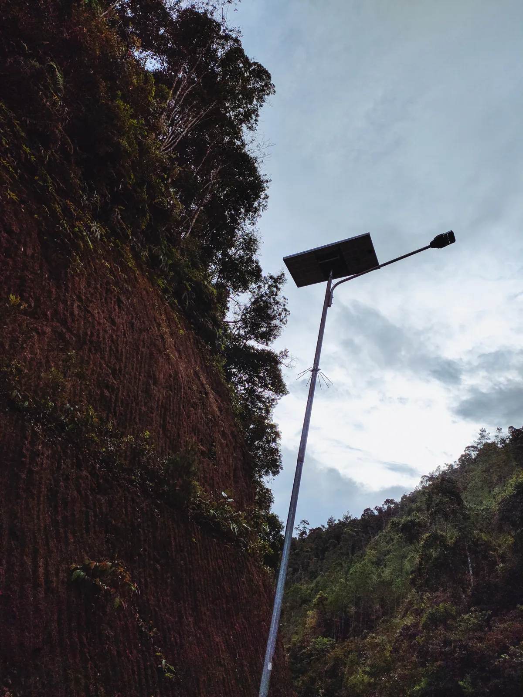
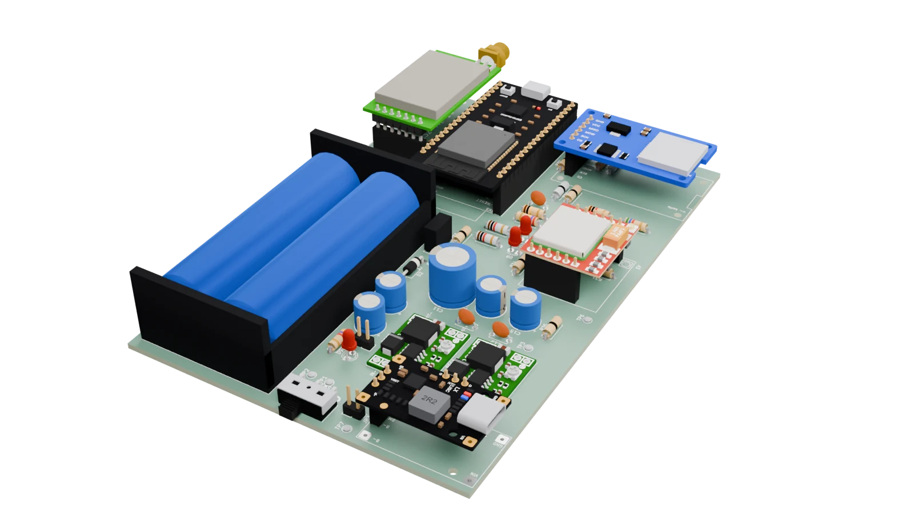

MONITORING LAMPU JALAN TENAGA SURYA
AURORA
Kondisi di jalan.
Informasi yang sampai.
Rancangan sistem pemantauan melalui sensor, komunikasi, dan layar operator.
Ikuti ceritanya01 / MEMAHAMI KEBUTUHAN
Jauh dari pandangan.
Tetap perlu dipahami.
Lampu jalan tenaga surya dapat tersebar jauh dari pusat pemantauan. Ketika kondisinya berubah, operator membutuhkan informasi untuk menentukan di mana pemeriksaan diperlukan.
AURORA mengeksplorasi bagaimana kondisi di tiang dapat dibawa lebih dekat kepada orang yang merawatnya.


02 / PERJALANAN INFORMASI · RANCANGAN
Satu paket.
Sampai menjadi informasi.
Alur berikut menggambarkan rancangan sistem. Setiap tahap memiliki tingkat validasi yang berbeda.
-
01Tiang
Node dirancang membaca sensor dan merangkum pembacaan menjadi paket.
-
02Relay
Paket dapat diteruskan melalui LoRa; relay satu hop baru diuji dalam emulasi.
-
03Sink
Gateway dirancang meneruskan data melalui GSM. Penyimpanan microSD fisik belum diuji.
-
04Database
Data yang diterima disimpan;
message_idmembantu menghindari duplikasi. -
05Dashboard
Informasi disajikan kepada operator. Tampilan yang ditunjukkan masih memakai data simulasi.
Gulir untuk mengikuti perjalanan
03 / WUJUD RANCANGAN
Setiap komponen.
Satu peran.
Rancangan PCB Pusat/Relay menyatukan komponen komunikasi dan daya dalam satu papan. Dari desain inilah langkah pengujian berikutnya dimulai.


Lihat sudut dan detail rancangan


Komunikasi
LoRa 433 MHz direncanakan untuk perangkat akhir; uji bench terdahulu menggunakan radio 900 MHz.
Sink
SIM800L untuk jalur GSM; penyimpanan lokal microSD masih perlu validasi fisik.
Daya
Rancangan menggunakan dua baterai 18650, BMS, pengisi daya, dan buck.
04 / DARI DATA MENJADI KONTEKS
Satu pandangan.
Lebih banyak konteks.
Dashboard membantu membayangkan bagaimana data tiap lokasi dapat dibaca bersama. Di sini yang ditampilkan adalah versi awal dengan data simulasi.

Jalur online dan alur offline melalui microSD dan USB merupakan bagian dari rancangan; jalur offline belum diuji ujung ke ujung.
05 / BUKTI DAN PROGRES
Terbukti, target, dan belum dijalankan.
Setiap angka diberi label asalnya. Label menunjukkan seberapa dekat pengujian dengan keadaan sebenarnya.
Konteks bench. Semua hasil BENCH_RF di bawah diukur pada modul radio 900 MHz (E220-900T22D) dengan jarak sekitar 35 cm di meja. Di 433 MHz, frekuensi yang direncanakan untuk perangkat akhir, belum ada uji bench.
-
BENCH_RF
Link Pusat ↔ Tiang v3
Board dan radio nyata. Paket dari tiang tiba di Pusat pada jarak sekitar 35 cm.
229/229paket tiba -
BENCH_RF
Skenario rugi paket 30%
Mekanisme kirim ulang memulihkan pengiriman yang sengaja dibuat rugi.
100%pulih lewat retry -
BENCH_RF
Uji tahan satu jam
Pengiriman terus-menerus selama satu jam; semua paket tercatat di program gateway pada laptop.
454/454tercatat di gateway -
BENCH_RF
v4: ACK setelah tersimpan
ACK baru dikirim setelah paket tersimpan di SQLite pada gateway laptop. Program gateway sengaja dimatikan 60 detik di tengah pengiriman.
25/25tiba · 0 gap -
EMULASI
Relay satu hop
Hanya emulasi. Belum ada relay lewat radio nyata; itu butuh papan ketiga.
155/155emulasi, bukan RF -
HOST_TEST
Tes otomatis dan fuzz
Ratusan tes otomatis lulus di komputer, tanpa board. Uji fuzz berupa simulasi.
0/1000gagal pada fuzz (simulasi) -
CLOUD_TEST
Sink ke cloud lewat SIM Telkomsel
Satu paket dummy dari sink (SIM800L) tersimpan di database cloud, tanpa jalur LoRa. Data bertanda simulated; sensor fisik penuh belum melewati jalur ini.
201HTTP stored
Batas bukti
Belum terbukti, NOT RUN.
Hal-hal berikut belum dijalankan atau belum terbukti.
- Relay lewat RF nyata (satu relay, dua lompatan radio). Butuh papan ketiga; belum ada.
- Operasi di 433 MHz. Belum ada uji bench dengan radio 433 MHz.
- Jangkauan lapangan. Belum ada pengujian jarak di lapangan.
- Flush kartu SD nyata. Penulisan data ke kartu microSD pada perangkat sungguhan belum dijalankan.
- Akurasi lokalisasi jarak. Belum diukur.
- Kepatuhan regulasi. Kepatuhan regulasi belum diverifikasi.
- Deteksi anomali dan pembacaan sensor penuh. Belum diimplementasikan pada prototipe; sebagian pembacaan energi dan suhu masih ditandai tidak valid.
- Akurasi sensor dan F1 deteksi anomali. Wilayah kerja Grego dan Iffat; belum ada angkanya di data kami.
- Sensor fisik penuh lewat jalur cloud, serta dashboard hasil redesain dengan LoRa nyata.
Target teknis awal
Ini target yang kami pasang di awal, bukan hasil. Angka bench di atas tidak otomatis berarti target ini terpenuhi.
| Aspek | Target | Status |
|---|---|---|
| Akurasi sensor | ≥ 80% | target |
| Deteksi anomali (4 skenario) | ≥ 85% | target |
| Latensi median end-to-end | ≤ 10 s | target |
| PDR LoRa | ≥ 90% | target |
| Route success | ≥ 90% | target |
| Operasi kontinu | ≥ 2 jam, data hilang ≤ 5% | target |
06 / ORANG DI BALIK AURORA
Empat perspektif.
Satu tujuan.
Empat lapisan cahaya, empat anggota tim yang membangun dan menguji AURORA bersama.
-
01
Grego
Hardware & Sensing
-
02
Iffat
Condition Intelligence
-
03
Mirzariel (Eril)
Resilient Communication
-
04
Qiara
System Observability & UX